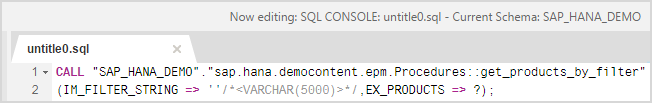
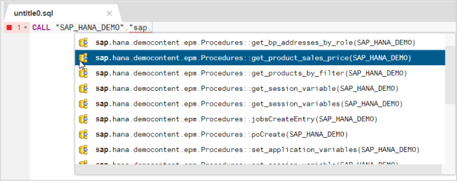
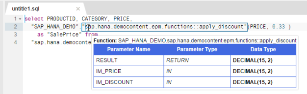

SQL Console
The SQL console provides an SQL editor that allows you to work with SQL statements. You can enter, execute, and analyze SQL statements in the SQL console.
You can open the SQL console in the following ways:
- In the toolbar, choose (Open SQL console).
- In the catalog tree, choose Open SQL Console from the context menu of a schema or schema sub-node.
- Invoke a procedure or function or generate a SQL statement on a table or view using the respective context menu or toolbar option.
Each SQL console works with its own schema and parameters. You can see with which schema the SQL console is currently associated in the now editing section on the screen, as shown in the example below:

The current schema is used when SQL statements use database object names, for example, table names, that are not prefixed with a schema name.
The following rules apply:
- You can write SQL syntax elements in upper case or lower case.
- You can add any number of spaces and line breaks.
- To force the system to distinguish between upper-case and lower-case letters in database object names (such as table names), enter the name between double quotation marks, for example, "My_Table".
- Separate multiple SQL statements with a semicolon (;).
- To comment out a line, use -- (double hyphens) at the start of the line.
The code completion feature provides a list of syntactic and semantic proposals based on the given context and textual input. Code completion proposals include the following:
- Local variables, such as input and output parameters, declared scalar variables
- Catalog objects, such as schemas, views, table functions, procedures, scalar functions, synonyms
- Code snippets
- Keywords
To open a list of proposals, press the key combination CTRL + SPACEBAR at the appropriate point in your code and then use the arrow keys to scroll through the displayed list. Press ENTER on a highlighted entry to apply it to your code.
Example:

Press CTRL and hover over a table, view, or procedure in the SQL console to display the definition of the object.
Example:

Execute SQL statements by choosing  (Run) in
the toolbar. If you have entered several statements, you can execute them
individually by highlighting the statement and choosing (Run). If
you do not highlight an individual statement, all statements are executed.
(Run) in
the toolbar. If you have entered several statements, you can execute them
individually by highlighting the statement and choosing (Run). If
you do not highlight an individual statement, all statements are executed.
The Result tab appears with the statement's results. Multiple Result tabs may open depending on the number of statements executed.
You can open, save, and download SQL console contents as SQL files.
Note that you can enable auto-save for SQL console contents in the catalog settings.